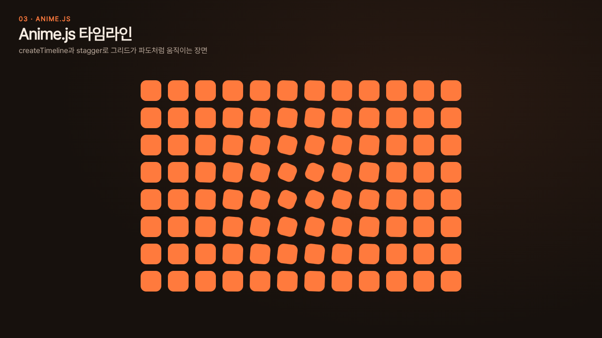
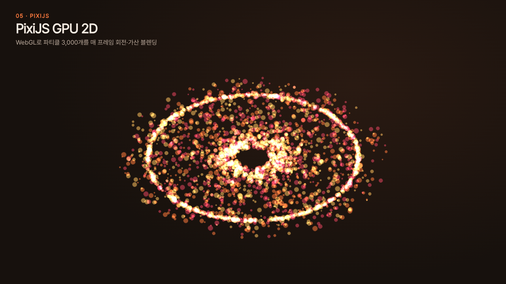
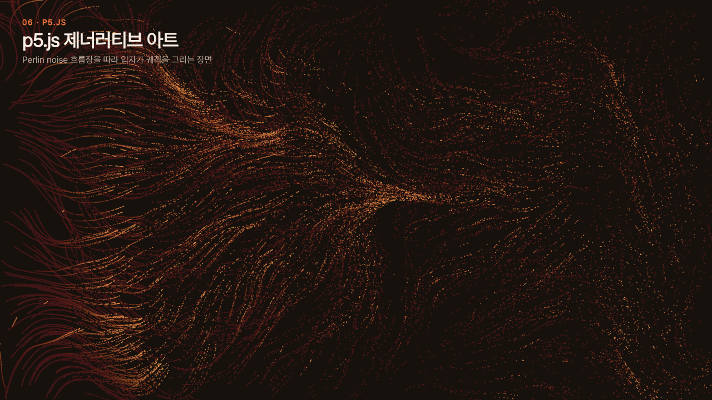
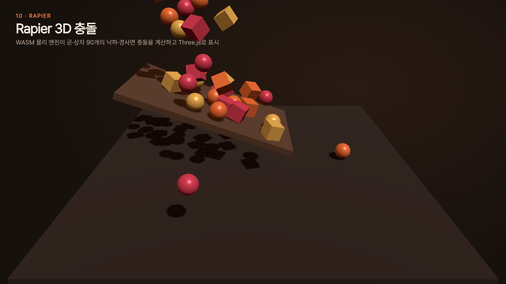
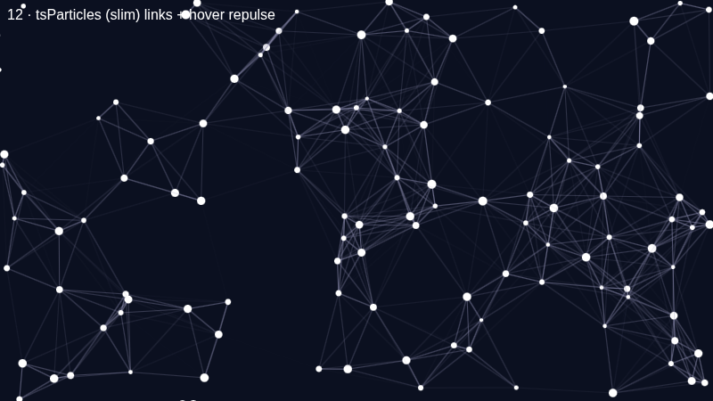
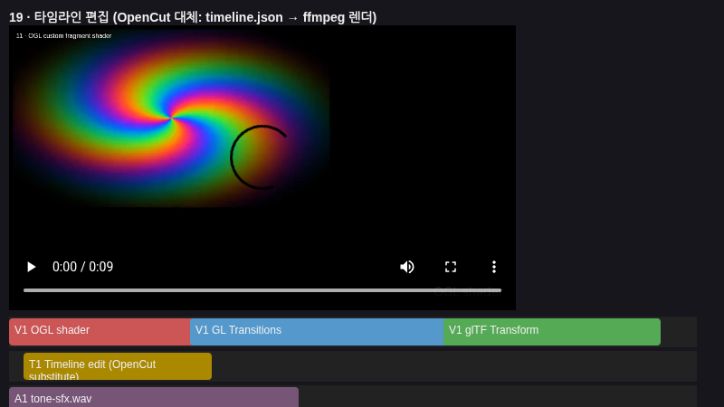

Remotion
React 컴포넌트를 프레임 단위로 렌더링해 MP4로 만드는 영상
영상 보기 →X 글(@hzxuang) 목록 20개 전체 · 로컬 서버에서 열기: python3 -m http.server
React 컴포넌트를 프레임 단위로 렌더링해 MP4로 만드는 영상
영상 보기 →
HTML+GSAP 타임라인을 프레임 단위로 캡처해 MP4로 렌더링
영상 보기 →
createTimeline과 stagger(grid)로 96개 타일이 파도처럼 움직이는 타임라인
데모 열기 →
useTrail·useSpring으로 튕기며 따라오는 스프링 물리 모션
데모 열기 →
WebGL 스프라이트 3,000개를 가산 블렌딩으로 매 프레임 회전
데모 열기 →
Perlin noise 흐름장을 따라 입자 1,400개가 궤적을 그리는 제너러티브 아트
데모 열기 →
세그먼트를 매 프레임 옮기고 smooth()로 베지어를 다시 계산하는 벡터 물결
데모 열기 →
중력·충돌·마찰로 도형 160개가 경사판에 쏟아져 쌓이는 2D 물리
데모 열기 →
조명·그림자·PBR 재질의 토러스 노트와 회전 큐브 링 3D 씬
데모 열기 →
WASM 물리 엔진으로 공·상자 90개의 낙하·경사면 충돌을 계산하고 Three.js로 표시
데모 열기 →



